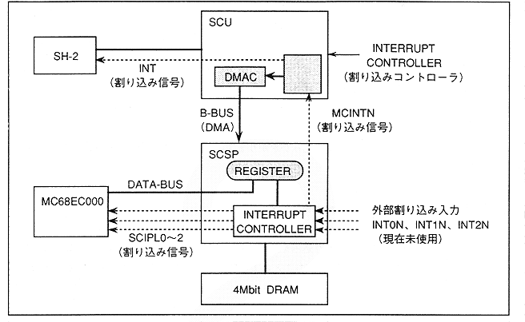

Figure 4.62 Sound interrupt signal connection diagram

The sound block interrupt signal system is connected to each CPU with the SCSP interrupt controller at the center. The interrupt signal for the sound CPU is performed by auto vector interrupts from level 1 to level 7. For the interrupt to the main CPU, level setting and vector setting cannot be performed from the sound CPU side.
∙ Interrupts to the main CPU can be used not only as an interrupt function but also as a trigger for the SCU DMA transfer start. This function allows the sound CPU to control the timing of DMA transfer of enormous data such as waveform data. When using this function, make sure that the main side (SCU, etc.) is configured in advance so that DMA transfer is started by a sound interrupt (refer to the SCU user's manual for details). Please).